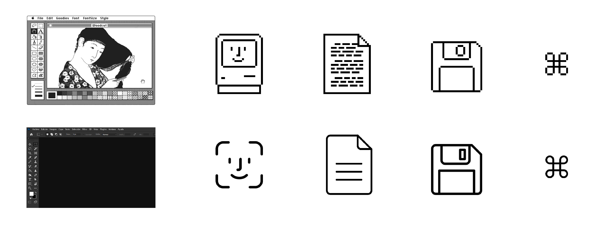

Observando la carrera profesional de Susan Kare y algunos de sus diseños más icónicos, es evidente su influencia en el ámbito del diseño incluso a día de hoy. Del mismo modo, su enfoque a la hora de abordar los proyectos de diseño se mantiene de manera muy similar en la actualidad: fases de investigación y planeación, bocetos, diseño simplificadoy, finalmente, iteración y refinamiento.
La influencia de sus diseños en sí es también muy clara. Muchos de los iconos diseñados originalmente por Susan Kare se mantienen prácticamente idénticos en la actualidad. Lo mismo ocurre con las interfaces que diseñó, que marcaron el camino que se sigue hoy en día en gran cantidad de programas y aplicaciones. Aquí se muestran algunos de esos diseños que han pervivido en el tiempo con ligeras adaptaciones.
